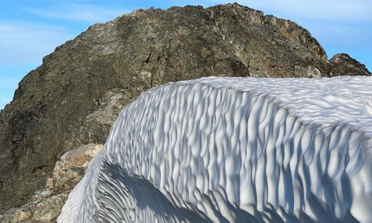

In this class we will refresh our knowledge of the math we've already learned and use computational skills to apply this knowledge to interesting and important situations you may encounter in life.
Functions and compositions
Project 1: due Monday, March 4
We review what you've learned about math in a new light and build some useful tools
Calculus review
week 6: apr 22-26
1. Thinking about calc with the motivating examples of e^x and Riemann sums,
2. Limits and continuity, deriving limits for well known polynomials for f(x+h) as h->0,
3. Applications of calc through algebraic ideas we already know
Measurement
Project 2: due Monday, March 18
We take a break and have a fun week to learn about units of measure and think about what it means to measure something. (Hint: The word "rational" is related to "ratio", which implies that you can measure and compare things with the same units.)
Combinatorics and Probability
Project 3: due Monday, April 8
We investigate ways of counting and apply those techniques to study probability.
Beyond regression: Statistics with clustering algorithms

Project 4: due Monday, April 22
Learning to use programs like Python to do work for us.
Regularization Project
Project 5: due Monday, May 20
We study more advanced ways to draw lines of best fit by approximating relationships with polynomials... and investigate "regularization parameters" as a way to avoid overfitting.